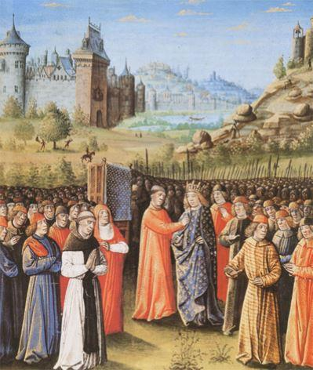
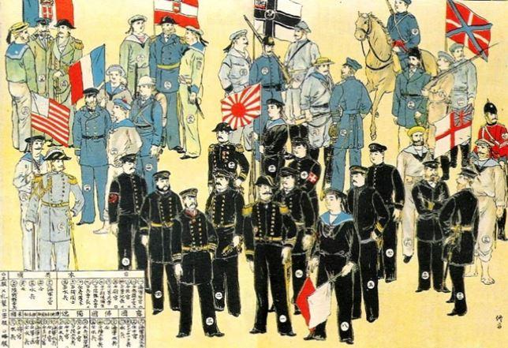
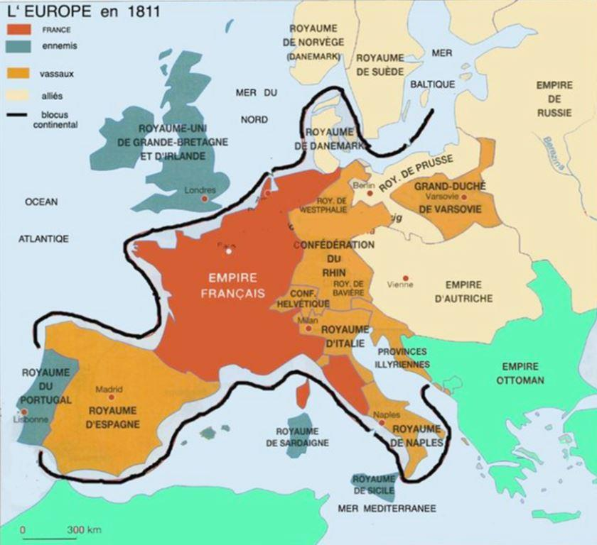
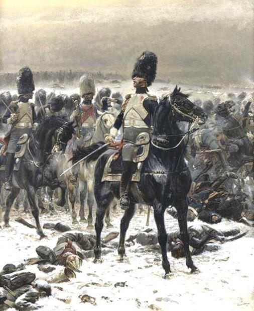
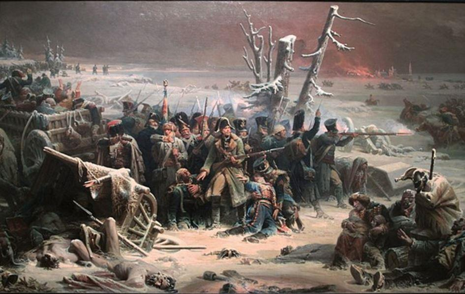
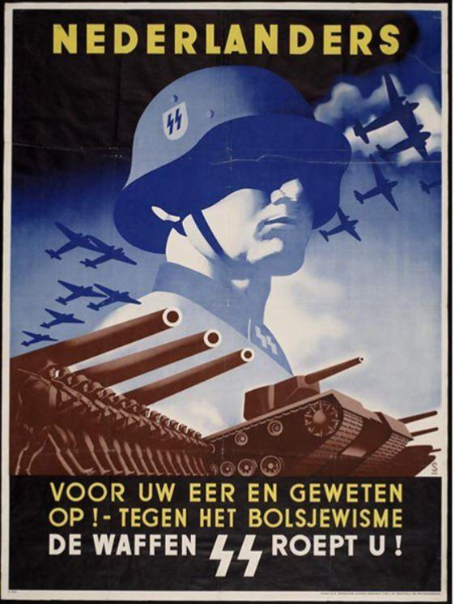
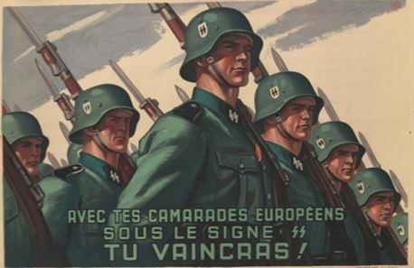
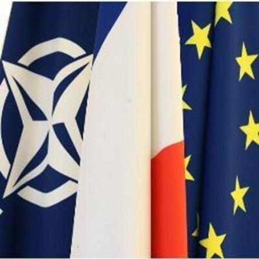

C’est peu dire que l’idée d’une armée européenne est à la mode – mise à toutes les sauces, cette idée nous est imposée matin, midi et soir par tous les canaux de pensée et d’informations. On est pour l’Europe, comme on est pour la Paix, la Tolérance et les solutions politiques aux conflits – de la même façon qu’on est contre le SIDA, la grêle et les accidents d’avions. Seuls quelques industriels et officiers de haut niveau osent émettre quelques doutes – mais là, attention, les sanctions tombent vite et on se retrouve vite sur la touche.
L’Europe ayant connu de nombreuses guerres au cours des siècles écoulés, on va donc tenter de vous vendre cette mise en communion des forces armées comme la solution miracle, pour ne plus se lancer les uns contre les autres : en effet, dans l’esprit du public, faire partie d’une même Armée serait la meilleure garantie contre les conflits …. C’est juste oublier un peu vite de nombreux exemples de l’Histoire, de la guerre de Sécession à la Révolution bolchevique, de la guerre civile d’Espagne aux combats fratricides entre gaullistes et vichystes de la deuxième guerre mondiale…. On a même dit que la guerre civile est…. la seule où l’on sait contre qui on se bat ! (eh oui, dans les autres guerres européennes, les politiques vous envoyaient au combat contre des gens qui étaient comme vous) En Syrie en 1941, les généraux, de bords opposés, Legentilhomme et de Verdilhac avaient une promo d’écart à St-Cyr….. et quand l’aviso « Savorgnan de Brazza » incendia son sister-ship le « Bougainville » au Gabon en novembre 1940, leurs commandants devaient bien se connaitre…. Donc mettre tout le monde ensemble n’est pas une garantie de paix, loin de là.
On nous vend aussi cette idée d’armée européenne comme une grande première, une idée à laquelle vraiment personne n’aurait pensé auparavant, la promesse des lumières apportée par l’Union Européenne de Bruxelles, la solution à tous les problèmes…
Là aussi, nos concitoyens qui ont perdu de vue le tragique de l’Histoire, ne peuvent qu’être d’accord, puisque ce serait la promesse de la Paix (et on rajoute pour faire bonne mesure les droits de l’homme, la lutte contre catastrophe naturelles, les interventions humanitaires, les mandats de l’ONU eux aussi incontestables…) C’est oublier pour commencer qu’il y a déjà eu des armées européennes – nous en avons trouvé plusieurs :
Les Croisades que l’on s’efforce d’oublier et de dénigrer (« leur but était économique ! ») virent s’unir plusieurs armées européennes, au douzième siècle notamment avec la Troisième Croisade : Français de Philippe-Auguste, Anglais de Richard Cœur-de-Lion et Allemands de Frédéric 1er Barberousse, sans oublier les flottes marchandes de Venise et Gênes, qui tous réunirent la plus grande armée chrétienne jamais rassemblée pour ces opérations. Si cela n’est pas une armée européenne, que cela peut-il être ?
Mais le soin que prend depuis longtemps l’éducation nationale à faire oublier ces épopées, l’attention qui est portée à chaque opération dans ces régions désormais à bien dire « ce n’est pas une croisade », tout cela contribue à en faire disparaitre le souvenir – il faut bien vendre le concept d’armée européenne comme étant nouveau, jamais essayé auparavant…
Les pirates barbaresques qui empoisonnèrent la Méditerranée pendant des siècles, justifièrent de nombreuses opérations multinationales – des escadres françaises, anglaises, hollandaises et bien sûr espagnoles et portugaises, pourchassèrent jusque dans leurs refuges ces tristes brigands des mers, libérant à chaque fois des centaines d’esclaves qui n’avaient plus que la perspective de mourir enchainés dans ces sinistres bagnes. Il y eut donc de la coordination, des opérations combinées comme on disait il y a cinquante ans, des coalitions comme on dirait maintenant… les nations européennes chrétiennes arrivant à mettre leurs différends de côté pour quelque temps.
De la même façon, la révolte des Boxers de 1900 en Chine et le siège des légations européennes (« les 55 jours de Pékin ») donnèrent l’occasion, en sus d’une héroïque résistance commune sur place, à la constitution d’un corps multinational sous commandement anglais puis allemand, qui partit de la côte où croisaient les escadres coalisées, pour rentrer dans la capitale chinoise et y sauver les assiégés. Forçons-nous à énumérer les huit nations qui furent impliqués : Allemagne, France, Italie, Russie, Grande-Bretagne Etats-Unis d’Amérique, Autriche-Hongrie et Japon, tous ces pays pour une fois réunis et qui allaient se précipiter les uns contre les autres quatorze ans après…. Brève mais exemplaire constitution d’une armée européenne, un élan regretté par beaucoup au vu de ce qui attendait ce continent peu de temps après….
Retournons dans le passé. Quand Napoléon franchit le Niémen le 24 juin 1812, ce sont près de 500 000 hommes qu’il entraine à la conquête de la Russie – mais les Français ne comptent que pour la moitié de ces effectifs : Italiens, Suisses, Espagnols, Croates, Portugais, Belges, Hollandais, Autrichiens, Prussiens, Saxons, Westphaliens, Bavarois, et bien sûr Polonais, tous le suivent dans cette aventure insensée…
Chacun fera de son mieux, obéissant à ses officiers, avant que le spectre de la défaite ne donne des idées aux peuples d’Europe. Toujours est-il que pendant quelques années, on ne parlait pas que français dans les bivouacs de la Grande Armée, et que dragons, hussards et grenadiers napoléoniens avaient appris à compter sur leurs frères d’armes. Que faut-il de plus pour être européens, même si cette entreprise était au service d’un seul, et que là aussi tout soit fait pour en chasser le souvenir, dans une France qui pendant les quinze premières années de ce siècle, deux cent ans après, ne s’est consacrée par choix gouvernemental à aucune commémoration napoléonienne, laissant ce soin aux Tchèques et aux Russes (Austerlitz, Borodino…)… Faisons confiance aux Anglais pour de leur côté ne pas oublier Waterloo et Trafalgar, et même y inviter leurs très anciens adversaires (l’amiral espagnol quitta le dîner après s’y être fait quasiment insulté, le Français resta !)
Et cette Première Guerre patriotique nous conduit tout naturellement à parler de la Seconde, mais sans parti pris, en considérant le côté des agresseurs : quand s’élance l’opération Barbarossa le 22 juin 1941 à la conquête de l’URSS, les Allemands seront accompagnés de centaines de milliers d’Italiens, Hongrois, Croates, Slovaques, Roumains et Finlandais – sans oublier les « volontaires » espagnols de la division Azul.
Encore plus nettement, les plans démoniaques du pouvoir hitlérien feront que les nazis seront rejoints dans les années suivantes par des dizaines de nationalités et de minorités, pour diverses raisons : les Waffen SS auront des divisions de Français, Suédois et Norvégiens, Bosniaques musulmans, Néerlandais, Albanais, Hongrois, Wallons, Italiens, Lettons et Estoniens, tous réunis pour une cause damnée mais en laquelle ils croyaient cependant. Leurs gouvernements s’étaient entendus pour les y envoyer, donc d’une certaine façon et même si cela doit déplaire, ils constituaient une armée européenne…
Il y a eu beaucoup d’énumérations dans les paragraphes précédents, mais c’était pour bien rappeler que malgré les efforts de Bruxelles, constituer une armée européenne sera tout ce qu’on veut, bien ou mal, mais certainement pas quelque chose de nouveau. Les causes auront changé, certaines des précédentes définitivement condamnables selon le positionnement de chacun, avec quand même une certaine tendance bien évidente dans le monde actuel, le lecteur jugera…. Ainsi du Kossovo, pour lequel on bombarda la Serbie jusqu’à la soumission, puisqu’il avait été décidé dès le début neuf ans auparavant, que certains étaient les méchants - tout cela pour créer un état mafieux et djihadiste au cœur de l’Europe, avec une belle base américaine quand même (elle saute aux yeux sur Google Earth)…
Cette dernière triste campagne de 1999 nous fait aussi démasquer un argument souvent entendu à l’époque, et parfois réutilisé depuis (Lybie notamment) : il faudrait être alliés, faire une coalition pour pouvoir porter le fer chez ces ennemis objectifs, bref se mettre à dix pour abattre un pays tel que la Serbie de 99 (ou la Lybie de 2011) Soyons sérieux : en ce qui concerne la France, si on avait vraiment eu besoin de faire la guerre à un de ces deux pays, l’Armée française aurait plus que suffi – encore que….quand on voit les coupes financières et les pertes capacitaires que nous avons subies depuis une quinzaine d’années, on se dit que finalement il y a peut-être un plan derrière tout ça, de faire accepter que non, nous ne pouvons plus y aller tout seul, et qu’il faut procéder à cette union européenne, d’une façon de plus en plus intégrée… Un chef d’état-major de l’Armée de l’air ne disait-il pas il y a quelques années « nous ne serons plus jamais seuls… » Où sont passés les soldats de Napoléon et de la bataille de la Marne ?
Sur un plan technique, on cite souvent le manque d’avions ravitailleurs, comme un facteur nécessaire pour des opérations en coalition. Si on ne basait pas les avions aussi loin du théâtre, si on acceptait plus la Marine qui positionne ses porte-avions et surtout porte-hélicoptères au plus près, si on ne transportait pas des bombes pour rien en attendant qu’un LEGAD du poste de commandement se décide (vous savez, ces officiers non-combattants qui sont à côté des écrans, à mille kilomètres de là, et qui valident l’ouverture de feu, si c’est légal ou non) eh bien on aurait besoin de moins de ravitailleurs, non ? On vous parle aussi du support renseignement (satellites, guerre électronique) pour lequel le soutien des Américains serait si indispensable - c’est oublier qu’on nous donne ce qu’on veut bien nous donner, sans oublier de nous intoxiquer si nécessaire !
Et pour la plupart des pays européens désormais, quand on dit armée européenne, c’est OTAN que l’on comprend, on s’y est habitués. Alors oui, les petits pays aiment bien les coalitions, ils peuvent participer à l’utilisation d’équipements qu’ils n’auront jamais (porte-avions, sous-marins) et envahir les couloirs de l’OTAN avec leurs officiers privés de débouchés. Cette dernière remarque s’applique aussi à des pays plus grands, avec le scintillement des postes OTAN prestigieux : nombreux sont ceux qui doivent leurs étoiles au fait d’avoir été l’homme des Américains pendant des années …. Maintenant si cela leur plait après tout, je me souviens du général italien COMSOUTH à Naples qui sommeillait aux briefings à côté de son gesticulant adjoint américain ….
Donc à côté de ce pilier en béton que constitue l’OTAN plusieurs nations font semblant de chercher à faire une défense européenne (ah oui, on oubliait, la menace est russe, nous crie-t-on de l’autre côté de l’atlantique, il suffit de se promener dans nos villes et dans nos villages maintenant pour le constater, étonnant quand même qu’on n’ait jamais été tant envahis que depuis qu’on a décidé de former cette Europe…) ce qui permet d’occuper un peu de monde en faisant semblant d’y croire, sans le crier trop fort pour ne pas froisser les Américains…
Rappelons rapidement que quand on a besoin, on peut constituer une alliance sur un projet précis (Suez 1956 avec les Britanniques) ou sur un programme d’armement (avions Transall, missile Milan, hélicoptères Gazelles, frégates FREMM…) sans avoir besoin de proclamer que l’on est passés de l’ombre à la lumière et que dorénavant "tout programme se fera en coopération ou ne se fera pas" (Mme Parly, qui transmet si bien les éléments de langage de son patron, et qui aurait bien été en peine de citer les armements précédents au moment de sa prise de fonction)
Armements, conflits, si on fait la guerre c’est en général par intolérance et en fonction de nos propres intérêts, depuis que l’humanité existe (il y en a qui le découvrent, et s’en scandalisent même) et qu’en général on ne peut pas faire autrement, même si les diplomates dont c’est le fond de commerce appelleront encore et toujours à privilégier la négociation. Comme disait le Président Mitterrand « maintenant les armes vont parler » - et on n’a jamais prouvé depuis des siècles que les voisins puissent avoir une meilleure perception que vous de vos intérêts, et mettre leurs armes à votre service…

Partager cette page